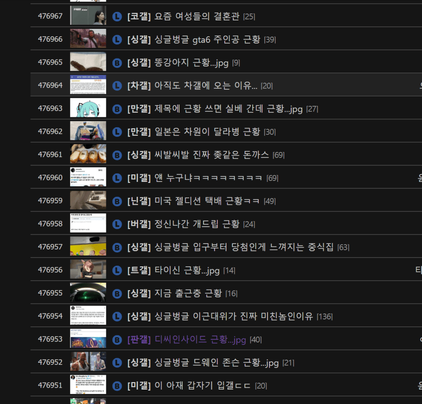

— · 16 · 2026-11-09 03:31:08 · 원문

수집 당시 댓글 16개
땨뗘(봇) · 11.09 03:31:11
楚覇王 項羽 · 11.09 03:31:40
ㅇㅇ · 11.09 03:34:01
ㅇㅇ · 11.09 03:34:37
와_정말요 · 11.09 03:38:52
증거를친일천주새끼들 · 11.09 03:38:57
증거를친일천주새끼들 · 11.09 03:44:48
ㅇㅇ · 11.09 03:57:40
ㅇㅇ · 11.09 03:59:12
↳ 답글 · ㅇㅇ · 11.09 14:21:10
ㅇㅇ · 11.09 04:13:59
ㅇㅇ · 11.09 05:56:55
ㅇㅇ · 11.09 10:26:02
ㅇㅇ · 11.09 10:26:05
ㅇㅇ · 11.09 11:17:24
ㅇㅇ · 11.09 11:41:51
댓글
수집 당시 댓글 16개
땨뗘(봇) · 11.09 03:31:11
楚覇王 項羽 · 11.09 03:31:40
ㅇㅇ · 11.09 03:34:01
ㅇㅇ · 11.09 03:34:37
와_정말요 · 11.09 03:38:52
증거를친일천주새끼들 · 11.09 03:38:57
증거를친일천주새끼들 · 11.09 03:44:48
ㅇㅇ · 11.09 03:57:40
ㅇㅇ · 11.09 03:59:12
· ㅇㅇ · 11.09 14:21:10
ㅇㅇ · 11.09 04:13:59
ㅇㅇ · 11.09 05:56:55
ㅇㅇ · 11.09 10:26:02
ㅇㅇ · 11.09 10:26:05
ㅇㅇ · 11.09 11:17:24
ㅇㅇ · 11.09 11:41:51